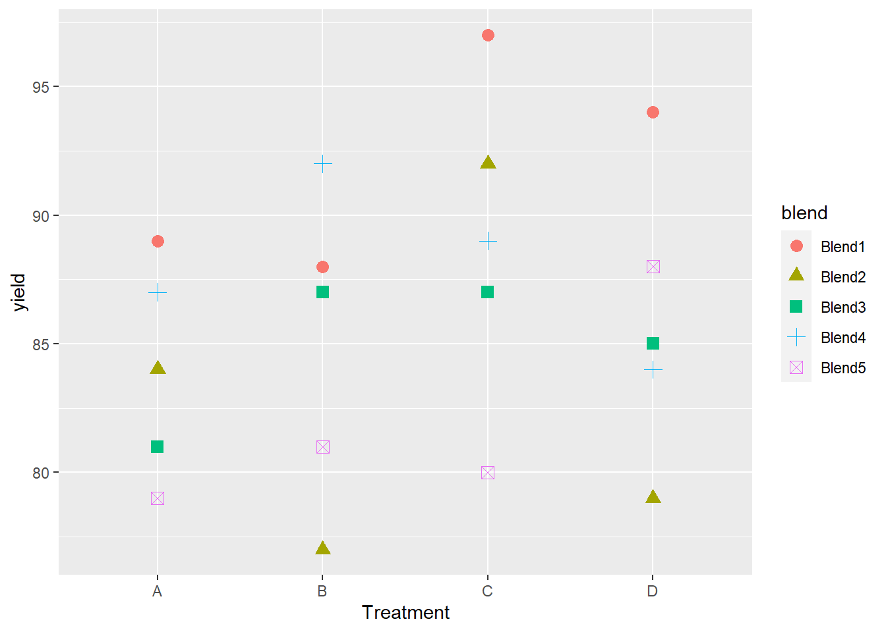

8.8 Application
R Packages for mixed models
nlmehas nested structure
flexible for complex design
not user-friendly
lme4computationally efficient
user-friendly
can handle nonnormal response
for more detailed application, check Fitting Linear Mixed-Effects Models Using lme4
Others
Bayesian setting:
MCMCglmm,brmsFor genetics:
ASReml
8.8.1 Example 1 (Pulps)
Model:
\[ y_{ij} = \mu + \alpha_i + \epsilon_{ij} \]
where
- \(i = 1,..,a\) groups for random effect \(\alpha_i\)
- \(j = 1,...,n\) individuals in each group
- \(\alpha_i \sim N(0, \sigma^2_\alpha)\) is random effects
- \(\epsilon_{ij} \sim N(0, \sigma^2_\epsilon)\) is random effects
- Imply compound symmetry model where the intraclass correlation coefficient is: \(\rho = \frac{\sigma^2_\alpha}{\sigma^2_\alpha + \sigma^2_\epsilon}\)
- If factor \(a\) does not explain much variation, low correlation within the levels: \(\sigma^2_\alpha \to 0\) then \(\rho \to 0\)
- If factor \(a\) explain much variation, high correlation within the levels \(\sigma^2_\alpha \to \infty\) hence, \(\rho \to 1\)
data(pulp, package = "faraway")
plot(
y = pulp$bright,
x = pulp$operator,
xlab = "Operator",
ylab = "Brightness"
)
pulp %>% dplyr::group_by(operator) %>% dplyr::summarise(average = mean(bright))## # A tibble: 4 x 2
## operator average
## <fct> <dbl>
## 1 a 60.2
## 2 b 60.1
## 3 c 60.6
## 4 d 60.7lmer application
library(lme4)
mixed_model <- lmer(formula = bright ~ 1 + (1 | operator), # pipe (i..e, | ) denotes random-effect terms
data = pulp)
summary(mixed_model)## Linear mixed model fit by REML ['lmerMod']
## Formula: bright ~ 1 + (1 | operator)
## Data: pulp
##
## REML criterion at convergence: 18.6
##
## Scaled residuals:
## Min 1Q Median 3Q Max
## -1.4666 -0.7595 -0.1244 0.6281 1.6012
##
## Random effects:
## Groups Name Variance Std.Dev.
## operator (Intercept) 0.06808 0.2609
## Residual 0.10625 0.3260
## Number of obs: 20, groups: operator, 4
##
## Fixed effects:
## Estimate Std. Error t value
## (Intercept) 60.4000 0.1494 404.2coef(mixed_model)## $operator
## (Intercept)
## a 60.27806
## b 60.14088
## c 60.56767
## d 60.61340
##
## attr(,"class")
## [1] "coef.mer"fixef(mixed_model) # fixed effects## (Intercept)
## 60.4confint(mixed_model) # confidence interval## Computing profile confidence intervals ...## 2.5 % 97.5 %
## .sig01 0.000000 0.6178987
## .sigma 0.238912 0.4821845
## (Intercept) 60.071299 60.7287012ranef(mixed_model) # random effects## $operator
## (Intercept)
## a -0.1219403
## b -0.2591231
## c 0.1676679
## d 0.2133955
##
## with conditional variances for "operator"VarCorr(mixed_model) # random effects standard deviation## Groups Name Std.Dev.
## operator (Intercept) 0.26093
## Residual 0.32596re_dat = as.data.frame(VarCorr(mixed_model))
rho = re_dat[1,'vcov']/(re_dat[1,'vcov'] + re_dat[2,'vcov']) # rho based on the above formula
rho## [1] 0.3905354To Satterthwaite approximation for the denominator df, we use lmerTest
library(lmerTest)##
## Attaching package: 'lmerTest'## The following object is masked from 'package:lme4':
##
## lmer## The following object is masked from 'package:stats':
##
## stepsummary(lmerTest::lmer(bright ~ 1 + (1 | operator), pulp))$coefficients## Estimate Std. Error df t value Pr(>|t|)
## (Intercept) 60.4 0.1494434 3 404.1664 3.340265e-08confint(mixed_model)[3,]## Computing profile confidence intervals ...## 2.5 % 97.5 %
## 60.0713 60.7287In this example, we can see that the confidence interval computed by confint in lmer package is very close is confint in lmerTest model.
MCMglmm application
under the Bayesian framework
library(MCMCglmm)## Warning: package 'MCMCglmm' was built under R version 4.0.5## Loading required package: coda## Loading required package: ape## Warning: package 'ape' was built under R version 4.0.5mixed_model_bayes <- MCMCglmm(bright~1,random=~operator, data=pulp, verbose=FALSE)
summary(mixed_model_bayes)$solutions## post.mean l-95% CI u-95% CI eff.samp pMCMC
## (Intercept) 60.39357 60.07742 60.66047 1184.638 0.001this method offers the confidence interval slightly more positive than lmer and lmerTest
8.8.1.1 Prediction
# random effects prediction (BLUPs)
ranef(mixed_model)$operator## (Intercept)
## a -0.1219403
## b -0.2591231
## c 0.1676679
## d 0.2133955fixef(mixed_model) + ranef(mixed_model)$operator #prediction for each categories## (Intercept)
## a 60.27806
## b 60.14088
## c 60.56767
## d 60.61340predict(mixed_model, newdata=data.frame(operator=c('a','b','c','d'))) # equivalent to the above method## 1 2 3 4
## 60.27806 60.14088 60.56767 60.61340use bootMer() to get bootstrap-based confidence intervals for predictions.
Another example using GLMM in the context of blocking
Penicillin data
data(penicillin, package = "faraway")
summary(penicillin)## treat blend yield
## A:5 Blend1:4 Min. :77
## B:5 Blend2:4 1st Qu.:81
## C:5 Blend3:4 Median :87
## D:5 Blend4:4 Mean :86
## Blend5:4 3rd Qu.:89
## Max. :97library(ggplot2)
ggplot(penicillin, aes(
y = yield,
x = treat,
shape = blend,
color = blend
)) + # treatment = fixed effect, blend = random effects
geom_point(size = 3) +
xlab("Treatment")
library(lmerTest) # for p-values
mixed_model <- lmerTest::lmer(yield ~ treat + (1 | blend),
data = penicillin)
summary(mixed_model)## Linear mixed model fit by REML. t-tests use Satterthwaite's method [
## lmerModLmerTest]
## Formula: yield ~ treat + (1 | blend)
## Data: penicillin
##
## REML criterion at convergence: 103.8
##
## Scaled residuals:
## Min 1Q Median 3Q Max
## -1.4152 -0.5017 -0.1644 0.6830 1.2836
##
## Random effects:
## Groups Name Variance Std.Dev.
## blend (Intercept) 11.79 3.434
## Residual 18.83 4.340
## Number of obs: 20, groups: blend, 5
##
## Fixed effects:
## Estimate Std. Error df t value Pr(>|t|)
## (Intercept) 84.000 2.475 11.075 33.941 1.51e-12 ***
## treatB 1.000 2.745 12.000 0.364 0.7219
## treatC 5.000 2.745 12.000 1.822 0.0935 .
## treatD 2.000 2.745 12.000 0.729 0.4802
## ---
## Signif. codes: 0 '***' 0.001 '**' 0.01 '*' 0.05 '.' 0.1 ' ' 1
##
## Correlation of Fixed Effects:
## (Intr) treatB treatC
## treatB -0.555
## treatC -0.555 0.500
## treatD -0.555 0.500 0.500#The BLUPs for the each blend
ranef(mixed_model)$blend## (Intercept)
## Blend1 4.2878788
## Blend2 -2.1439394
## Blend3 -0.7146465
## Blend4 1.4292929
## Blend5 -2.8585859Examine treatment effect
anova(mixed_model) # p-value based on lmerTest## Type III Analysis of Variance Table with Satterthwaite's method
## Sum Sq Mean Sq NumDF DenDF F value Pr(>F)
## treat 70 23.333 3 12 1.2389 0.3387Since the p-value is greater than 0.05, we can’t reject the null hypothesis that there is no treatment effect.
library(pbkrtest)## Warning: package 'pbkrtest' was built under R version 4.0.5full_model <- lmer(yield ~ treat + (1 | blend), penicillin, REML=FALSE) #REML is not appropriate for testing fixed effects, it should be ML
null_model <- lmer(yield ~ 1 + (1 | blend), penicillin, REML=FALSE)
KRmodcomp(full_model, null_model) # use Kenward-Roger approximation for df## large : yield ~ treat + (1 | blend)
## small : yield ~ 1 + (1 | blend)
## stat ndf ddf F.scaling p.value
## Ftest 1.2389 3.0000 12.0000 1 0.3387Since the p-value is greater than 0.05, and consistent with our previous observation, we conclude that we can’t reject the null hypothesis that there is no treatment effect.
8.8.2 Example 2 (Rats)
rats <- read.csv(
"images/rats.dat",
header = F,
sep = ' ',
col.names = c('Treatment', 'rat', 'age', 'y')
)
rats$t <- log(1 + (rats$age - 45)/10) #log transformed ageWe are interested in whether treatment effect induces changes over time.
rat_model <- lmerTest::lmer(y~t:Treatment+(1|rat),data=rats) #treatment = fixed effect, rat = random effects
summary(rat_model)## Linear mixed model fit by REML. t-tests use Satterthwaite's method [
## lmerModLmerTest]
## Formula: y ~ t:Treatment + (1 | rat)
## Data: rats
##
## REML criterion at convergence: 932.4
##
## Scaled residuals:
## Min 1Q Median 3Q Max
## -2.25574 -0.65898 -0.01163 0.58356 2.88309
##
## Random effects:
## Groups Name Variance Std.Dev.
## rat (Intercept) 3.565 1.888
## Residual 1.445 1.202
## Number of obs: 252, groups: rat, 50
##
## Fixed effects:
## Estimate Std. Error df t value Pr(>|t|)
## (Intercept) 68.6074 0.3312 89.0275 207.13 <2e-16 ***
## t:Treatmentcon 7.3138 0.2808 247.2762 26.05 <2e-16 ***
## t:Treatmenthig 6.8711 0.2276 247.7097 30.19 <2e-16 ***
## t:Treatmentlow 7.5069 0.2252 247.5196 33.34 <2e-16 ***
## ---
## Signif. codes: 0 '***' 0.001 '**' 0.01 '*' 0.05 '.' 0.1 ' ' 1
##
## Correlation of Fixed Effects:
## (Intr) t:Trtmntc t:Trtmnth
## t:Tretmntcn -0.327
## t:Tretmnthg -0.340 0.111
## t:Tretmntlw -0.351 0.115 0.119anova(rat_model)## Type III Analysis of Variance Table with Satterthwaite's method
## Sum Sq Mean Sq NumDF DenDF F value Pr(>F)
## t:Treatment 3181.9 1060.6 3 223.21 734.11 < 2.2e-16 ***
## ---
## Signif. codes: 0 '***' 0.001 '**' 0.01 '*' 0.05 '.' 0.1 ' ' 1Since the p-value is significant, we can be confident concluding that there is a treatment effect
8.8.3 Example 3 (Agridat)
library(agridat)
library(latticeExtra)## Loading required package: lattice## Warning: package 'lattice' was built under R version 4.0.5##
## Attaching package: 'lattice'## The following object is masked from 'package:faraway':
##
## melanoma##
## Attaching package: 'latticeExtra'## The following object is masked from 'package:ggplot2':
##
## layerdat <- harris.wateruse
# Compare to Schabenberger & Pierce, fig 7.23
useOuterStrips(
xyplot(
water ~ day | species * age,
dat,
as.table = TRUE,
group = tree,
type = c('p', 'smooth'),
main = "harris.wateruse 2 species, 2 ages (10 trees each)"
)
)
Remove outliers
dat <- subset(dat, day!=268)Plot between age and species
xyplot(
water ~ day | tree,
dat,
subset = age == "A2" & species == "S2",
as.table = TRUE,
type = c('p', 'smooth'),
ylab = "Water use profiles of individual trees",
main = "harris.wateruse (Age 2, Species 2)"
)
# Rescale day for nicer output, and convergence issues, add quadratic term
dat <- transform(dat, ti = day / 100)
dat <- transform(dat, ti2 = ti * ti)
# Start with a subgroup: age 2, species 2
d22 <- droplevels(subset(dat, age == "A2" & species == "S2"))lme function from nlme package
library(nlme)## Warning: package 'nlme' was built under R version 4.0.5##
## Attaching package: 'nlme'## The following object is masked from 'package:lme4':
##
## lmList## The following object is masked from 'package:dplyr':
##
## collapse## We use pdDiag() to get uncorrelated random effects
m1n <- lme(
water ~ 1 + ti + ti2, #intercept, time and time-squared = fixed effects
data = d22,
na.action = na.omit,
random = list(tree = pdDiag( ~ 1 + ti + ti2)) # random intercept, time and time squared per tree = random effects
)
ranef(m1n)## (Intercept) ti ti2
## T04 0.1985796 1.609864e-09 4.990101e-10
## T05 0.3492827 2.487690e-10 -4.845287e-11
## T19 -0.1978989 -7.681202e-10 -1.961453e-10
## T23 0.4519003 -3.270426e-10 -2.413583e-10
## T38 -0.6457494 -1.608770e-09 -3.298010e-10
## T40 0.3739432 3.264705e-10 -2.543109e-11
## T49 0.8620648 9.021831e-10 -5.402247e-12
## T53 -0.5655049 -8.279040e-10 -4.579291e-11
## T67 -0.4394623 -3.485113e-10 2.147434e-11
## T71 -0.3871552 7.930610e-10 3.718993e-10fixef(m1n)## (Intercept) ti ti2
## -10.798799 12.346704 -2.838503summary(m1n)## Linear mixed-effects model fit by REML
## Data: d22
## AIC BIC logLik
## 276.5142 300.761 -131.2571
##
## Random effects:
## Formula: ~1 + ti + ti2 | tree
## Structure: Diagonal
## (Intercept) ti ti2 Residual
## StdDev: 0.5187869 1.438333e-05 3.864019e-06 0.3836614
##
## Fixed effects: water ~ 1 + ti + ti2
## Value Std.Error DF t-value p-value
## (Intercept) -10.798799 0.8814666 227 -12.25094 0
## ti 12.346704 0.7827112 227 15.77428 0
## ti2 -2.838503 0.1720614 227 -16.49704 0
## Correlation:
## (Intr) ti
## ti -0.979
## ti2 0.970 -0.997
##
## Standardized Within-Group Residuals:
## Min Q1 Med Q3 Max
## -3.07588246 -0.58531056 0.01210209 0.65402695 3.88777402
##
## Number of Observations: 239
## Number of Groups: 10lmer function from lme4 package
m1lmer <- lmer(water~1+ti+ti2+(ti+ti2||tree),data = d22,na.action = na.omit)## boundary (singular) fit: see ?isSingularranef(m1lmer)## $tree
## (Intercept) ti ti2
## T04 0.1985796 0 0
## T05 0.3492827 0 0
## T19 -0.1978989 0 0
## T23 0.4519003 0 0
## T38 -0.6457494 0 0
## T40 0.3739432 0 0
## T49 0.8620648 0 0
## T53 -0.5655049 0 0
## T67 -0.4394623 0 0
## T71 -0.3871552 0 0
##
## with conditional variances for "tree"Notes:
||double pipes= uncorrelated random effectsTo remove the intercept term:
(0+ti|tree)(ti-1|tree)
fixef(m1lmer)## (Intercept) ti ti2
## -10.798799 12.346704 -2.838503m1l <- lmer(water ~ 1 + ti + ti2 + (1 | tree) + (0 + ti | tree) + (0 + ti2 | tree), data = d22)## boundary (singular) fit: see ?isSingularranef(m1l)## $tree
## (Intercept) ti ti2
## T04 0.1985796 0 0
## T05 0.3492827 0 0
## T19 -0.1978989 0 0
## T23 0.4519003 0 0
## T38 -0.6457494 0 0
## T40 0.3739432 0 0
## T49 0.8620648 0 0
## T53 -0.5655049 0 0
## T67 -0.4394623 0 0
## T71 -0.3871552 0 0
##
## with conditional variances for "tree"fixef(m1l)## (Intercept) ti ti2
## -10.798799 12.346704 -2.838503To include structured covariance terms, we can use the following way
m2n <- lme(
water ~ 1 + ti + ti2,
data = d22,
random = ~ 1 | tree,
cor = corExp(form = ~ day | tree),
na.action = na.omit
)
ranef(m2n)## (Intercept)
## T04 0.1929971
## T05 0.3424631
## T19 -0.1988495
## T23 0.4538660
## T38 -0.6413664
## T40 0.3769378
## T49 0.8410043
## T53 -0.5528236
## T67 -0.4452930
## T71 -0.3689358fixef(m2n)## (Intercept) ti ti2
## -11.223310 12.712094 -2.913682summary(m2n)## Linear mixed-effects model fit by REML
## Data: d22
## AIC BIC logLik
## 263.3081 284.0911 -125.654
##
## Random effects:
## Formula: ~1 | tree
## (Intercept) Residual
## StdDev: 0.5154042 0.3925777
##
## Correlation Structure: Exponential spatial correlation
## Formula: ~day | tree
## Parameter estimate(s):
## range
## 3.794624
## Fixed effects: water ~ 1 + ti + ti2
## Value Std.Error DF t-value p-value
## (Intercept) -11.223310 1.0988725 227 -10.21348 0
## ti 12.712094 0.9794235 227 12.97916 0
## ti2 -2.913682 0.2148551 227 -13.56115 0
## Correlation:
## (Intr) ti
## ti -0.985
## ti2 0.976 -0.997
##
## Standardized Within-Group Residuals:
## Min Q1 Med Q3 Max
## -3.04861039 -0.55703950 0.00278101 0.62558762 3.80676991
##
## Number of Observations: 239
## Number of Groups: 10